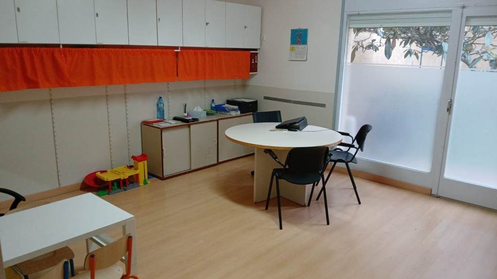
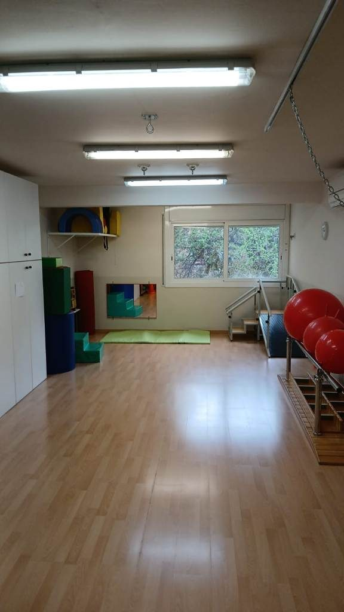
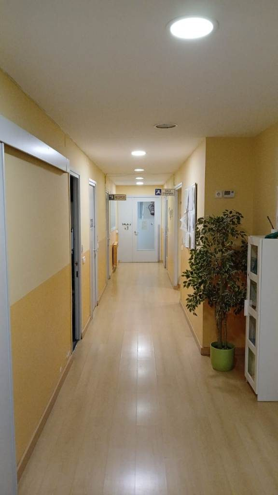
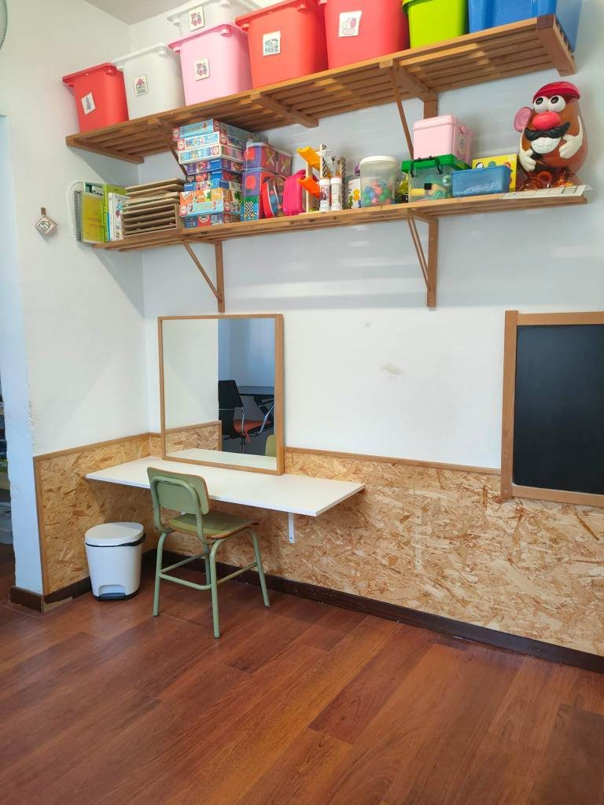
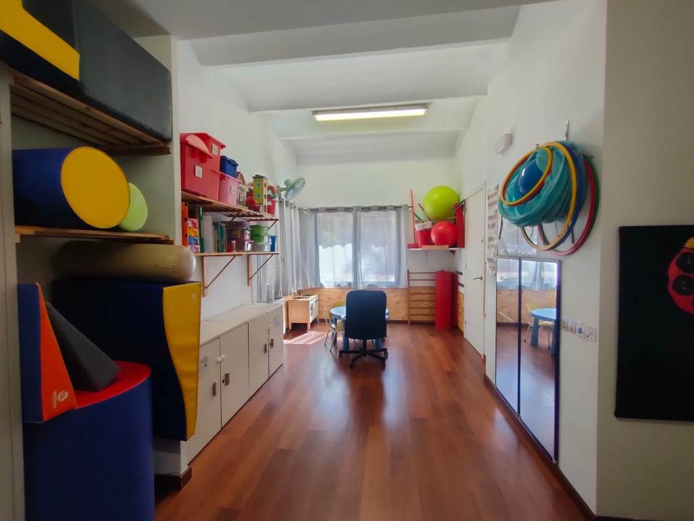
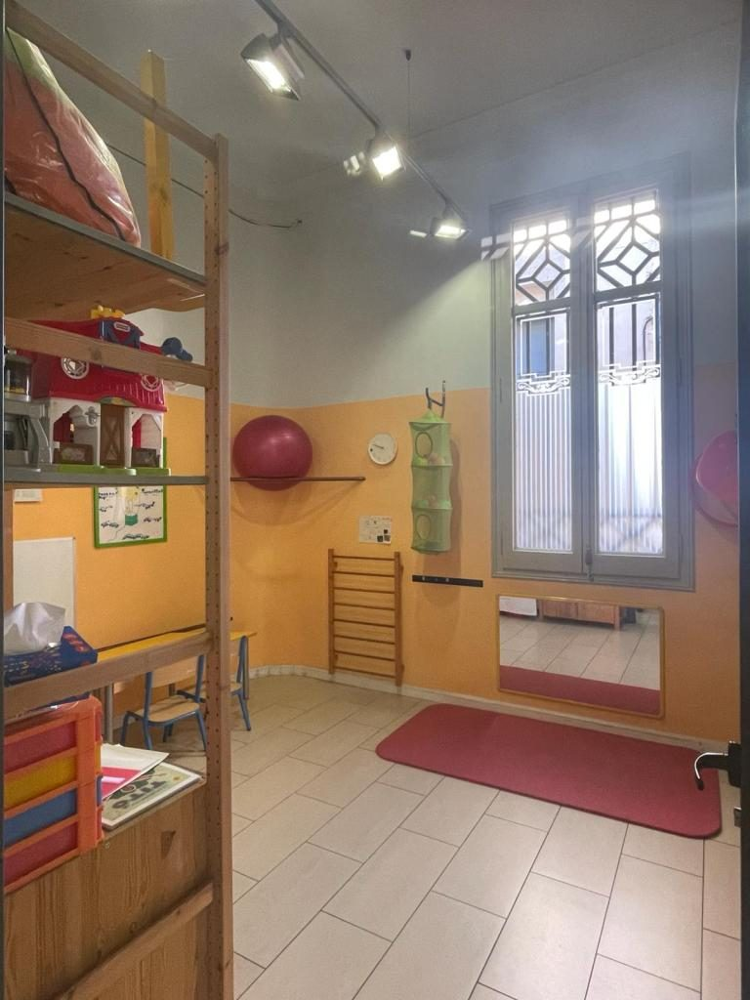
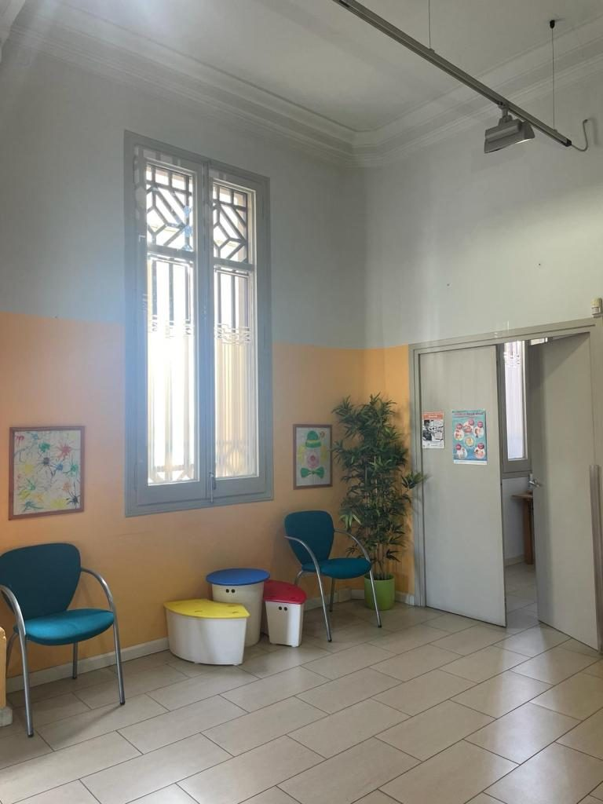
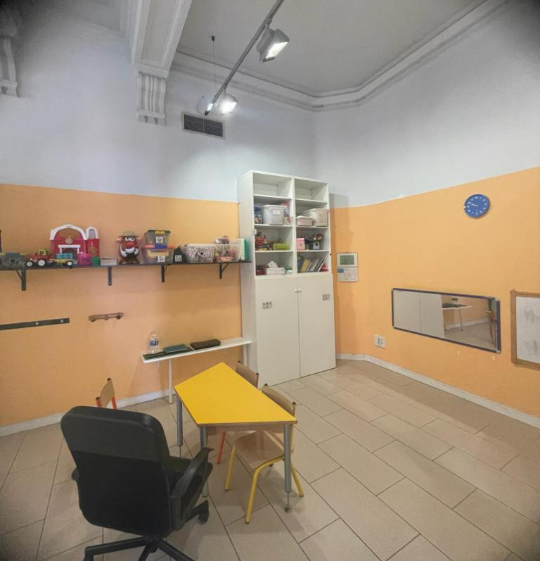

CDIAPs
Qui Som
Els Centres de Desenvolupament Infantil i Atenció Precoç (CDIAP) són serveis universals i gratuïts adreçats a infants de 0 a 6 anys que presenten dificultats en el seu desenvolupament o es troben en situació de risc.
La nostra finalitat és afavorir el desenvolupament global de l’infant i donar suport a la seva família promovent el seu benestar i inclusió en els diferents entorns.
La Fundació l'Espiga té concertats dos CDIAPs:
CDIAP L'Espiga amb número de registre S01256, ubicat a la Carretera de Moja, Número 9 de Vilafranca del Penedès. Dona atenció a la comarca de l'Alt Penedès i compta amb dos Serveis de Suport a l'Atenció Precoç, ubicats a Sant Sadurní d'Anoia, amb número de registre S09092 i a Gelida amb número de registre S08548.
Els nostres centres
VILAFRANCA DEL PENEDÈS



GELIDA


SANT SADURNÍ D'ANOIA



EL VENDRELL - CDIAP Baix Penedès


A qui va adreçat:
Els nostres CDIAPs s'adrecen a infants de 0 a 6 anys que presenten o poden presentar dificultats en diferents àrees del seu desenvolupament: comunicació i llenguatge, desenvolupament motriu, desenvolupament cognitiu i de l'aprenentatge i/o desenvolupament emocional i relacional. També s'adreça a aquelles famílies que tenen dubtes o preocupacions sobre la criança i el desenvolupament dels seus fills o filles.
L'equip professional:
El CDIAP compta amb un equip interdisciplinari de professionals especialitzats en el desenvolupament infantil i l'atenció a la petita infància. Aquest equip està format per professionals dels àmbits de la fisioteràpia, psicologia, psicopedagogia, logopèdia, treball social i neuropediatria.
L'equip professional treballa de manera coordinada per oferir una atenció global i personalitzada, adaptada a les necessitats de cada infant i a la seva família.
Què oferim:
- Avaluació global del desenvolupament de l'infant i diagnòstic interdisciplinar
- Atenció terapèutica a l'infant
- Suport i acompanyament a les famílies
- Coordinació amb altres serveis educatius, sanitaris i socials (escola bressol, escola, pediatria, serveis socials, etc.)
- Suport i orientació als professionals de l'educació infantil en les etapes de 0 a 3 pel que fa als aspectes del desenvolupament
- Prevenció i detecció precoç dels trastorns de desenvolupament i situacions de risc en la població infantil fins als sis anys
Com treballem:
La intervenció es basa en una mirada integral de l'infant i la seva família, respectant els seus ritmes i potenciant les seves capacitats. El treball es realitza des d'un enfocament biopsicosocial, amb una clara orientació cap al suport a les capacitats parentals i al vincle familiar, mitjançant pràctiques basades en l'evidència científica i l'ètica.
Per a més informació podeu veure la Carta de Serveis del nostres CDIAPs